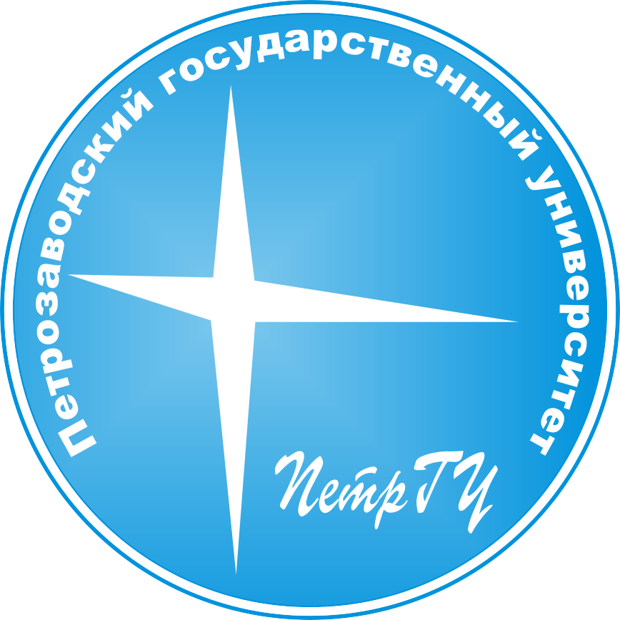

В данном интерактивном занятии геральдист Емелин Илья Борисович расскажет об истории, смысле и содержании гербов и флагов Республики Карелия и города Петрозаводска.


Интерактивное занятие с геральдистом